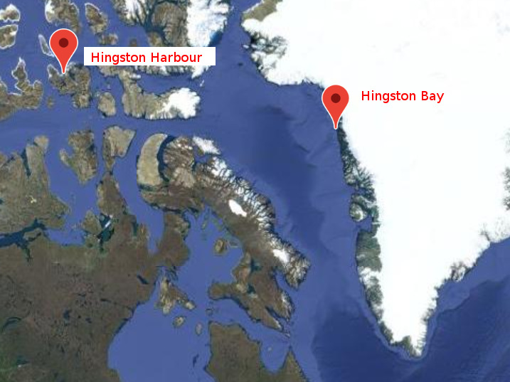
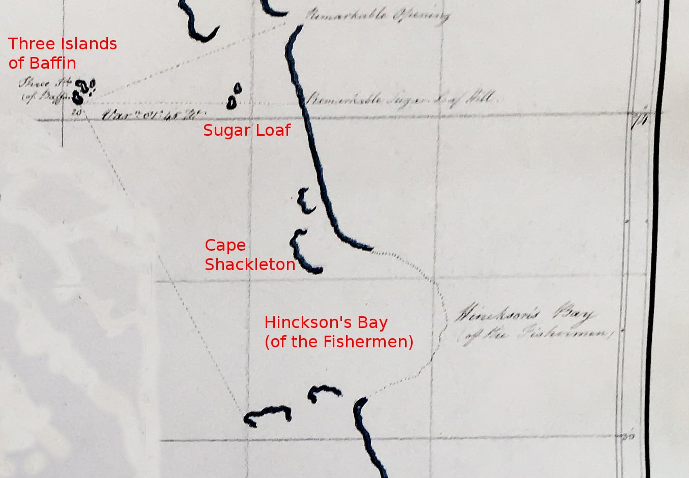
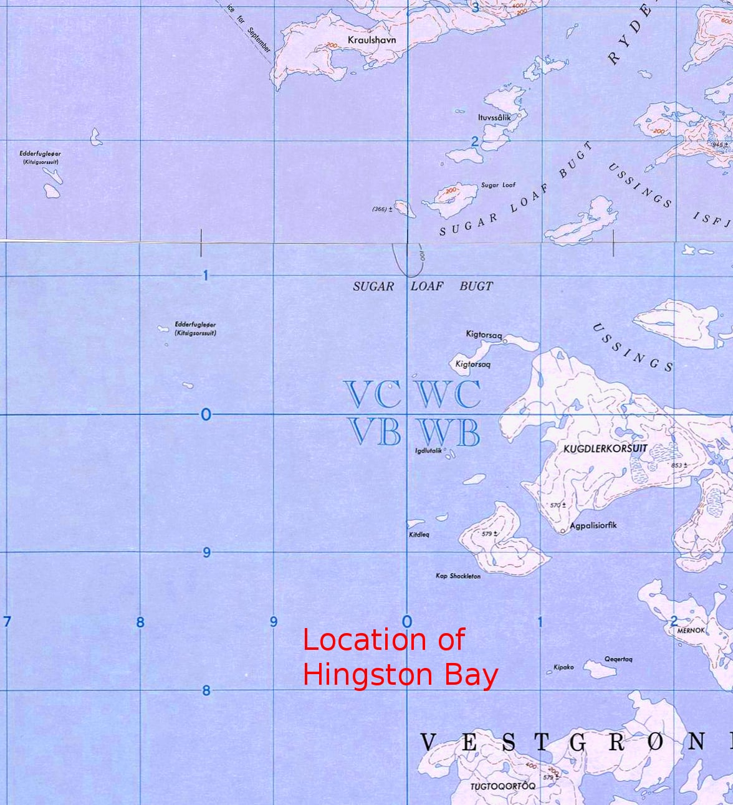
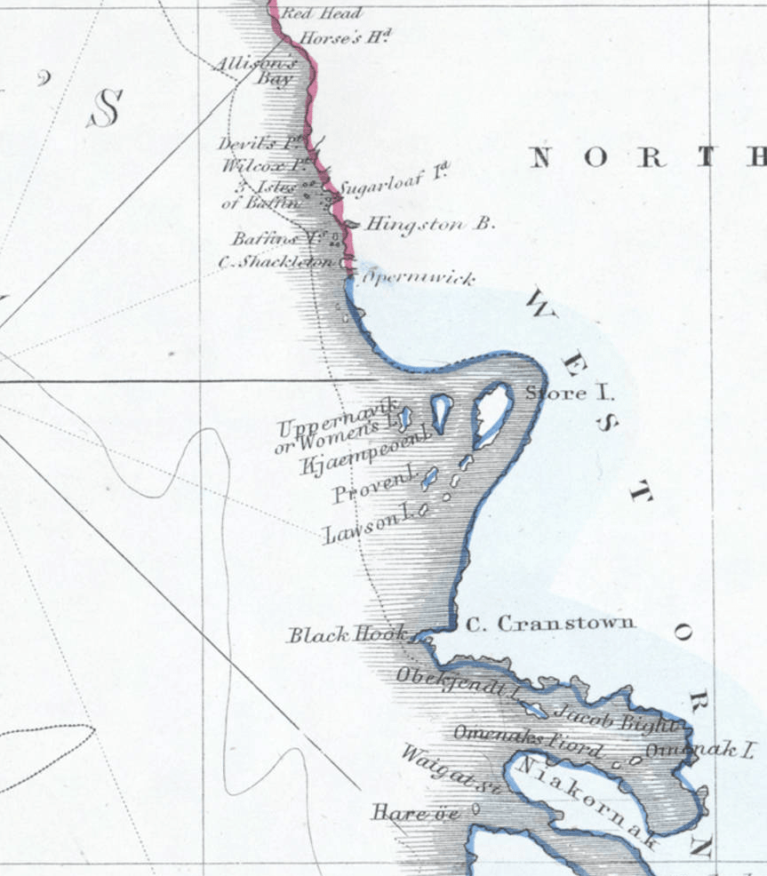
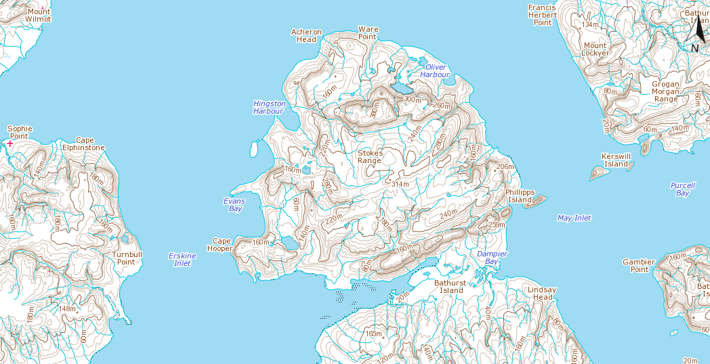
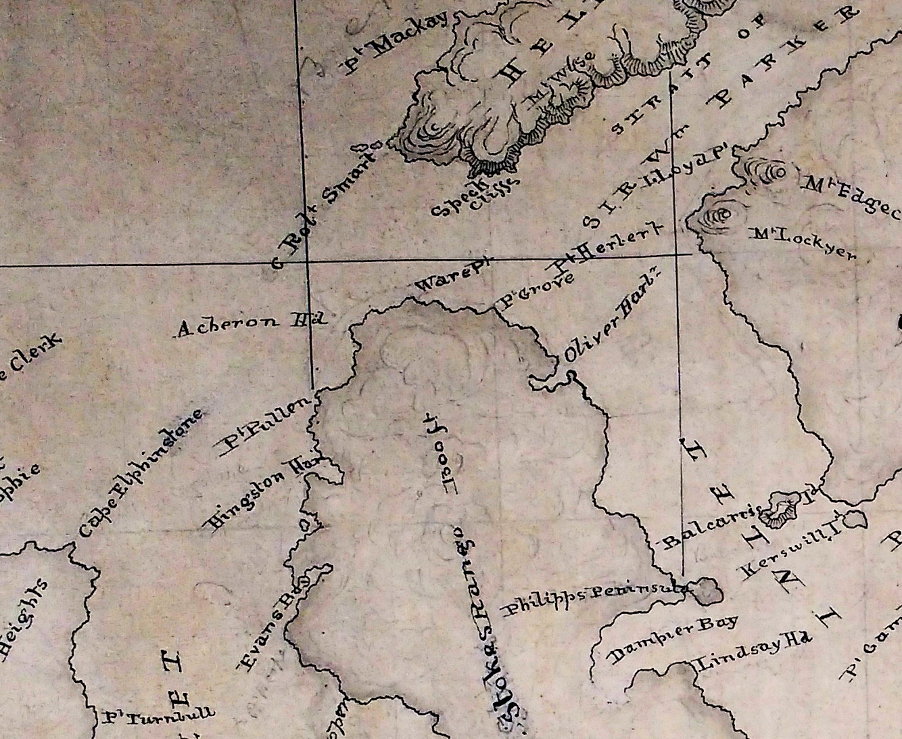
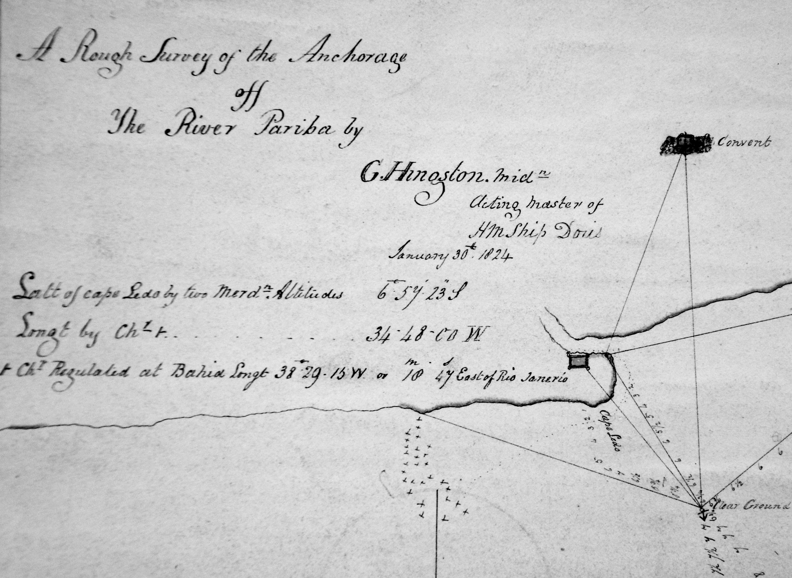

There are two locations in Greenland and Arctic Canada that are named after Hingstons, but we are unsure of what the connection is to the family. One is Hingston Bay on the west coast of Greenland at about 74° N, which WEH said was named after his great grandfather, HN#30 Edward Hingston who died in 1813. The other is Hingston Harbour on the north coast of Bathurst Island in Canada which is even further north at about 76.4° N. This area was not explored until 1853 so is almost certainly linked to the Hingston family in a different way.

Hingston Bay is located at about 74° N on the west coast of Greenland, on the edge of Baffin Bay. At the time of its discovery the shoreline was surrounded by ice and the features were not always clear, and in many years it was impossible to reach this far north, so there were errors in establishing position. Many locations have English, Danish and Inuit names so not all maps use the same names. Position on this coastline is normally described in terms of latitude. It may be useful to remember that one degree of latitude is 60 nautical miles or about 111 km. The following discussion describes how the area was explored and what we can surmise about how Hingston Bay might have been named.
Hingston Bay is not shown under that name on any modern map and most of the old published maps are not sufficiently detailed, but it was known to the Royal Navy by 1818 because an expedition led by John Ross in the Isabella and William Edward Parry in the Alexander sailed to the west of Greenland and "rediscovered" locations originally found by Baffin almost 200 years before. Ross and Parry sailed anticlockwise around the bay, going up the west coast of Greenland, into Lancaster Sound and then back down the east coast of Baffin Island. The account of the voyage (available as a 45MB file) states that the ships "stood into Kingston's Bay (sic) to determine its position" (implying that its existence was already known about) on the 11th or 12th July 1818, and lists Hingston Bay in the appendix as being at 73° 48' N, 57° 20' W, which is close to the area Ross refers to as "The Three Islands of Baffin". The bay is shown as Hingston Bay on the maps of the voyage. Ross did not say that he named the bay. Ross gives the location of Cape Shackleton as being 73° 36' N (73° 48' N on modern maps), and Sugar Loaf Island as 74° 02' N. This would imply that Hingston Bay is the sound between Sugar Loaf and Cape Shackleton.
I had long been wanting to visit the UK Hydrographic Office in Taunton, which is responsible for producing and updating Maritime Charts, and holds many of the old maps. My objective was to find out what maps would have been available to Ross and Parry in 1818 and I recently had the opportunity to visit it. They had no relevant nuatical charts dated before 1818 but they did have a set of charts engraved from Parry's original surveys that year. These show the original survey lines and it is possible to work out where he took his readings from and they make clear the quality of Parry's work. One chart (No.2) shows a set of readings made from the "Three Islands of Baffin", and one of these points to an inlet shown as "Hinckson's Bay (of the Fishermen)". Another points to "Remarkable Sugar Loaf Hill".

Overlaying this map on a modern map allows us to pinpoint the location of Hingstons Bay. Significantly, the bay is shown as being a bordered by ice, rather than rock or cliffs, so now that the ice has retreated, it no longer exists, at least as a named feature. The rocky headland just north of the bay, not identified by Parry, is Cape Shackleton, on the tip of modern Apparsuit Island, while the headland to the south is shown on some maps as Horse Head, after its shape, and is on Tuttorqortooq Island. It should be noted that Parry does not indicate any sort of bay between Cape Shackleton and the Sugar Loaf.

Parry's chart also makes clear that Hingston (or Hinckson's) Bay was named by the fishermen, which here means whalers. Ross mentions that there were Admiralty Charts of the area but he notes several times that they contained errors. These clearly already existed and it is an interesting question as to when and by whom they were produced; the Hydrographic Office had no record of them. The Navy hadn't been there for 200 years but there may have been Danish charts or charts produced by or for the whalers; I have been unable to find any. There is a good Danish web site where many maps of the area can be consulted, which show Danish and native names as well as English ones, but none that show Hingston Bay.
It is worth summarising the exploration of this area to see where a Hingston could have been involved.
The first to explore the area was John Davis (c. 1550 – 29 December 1605) who was one of the chief English navigators of Elizabeth I. He led several voyages to discover the Northwest Passage and served as pilot and captain on both Dutch and English voyages to the East Indies. He fought against the Spanish Armada and discovered the Falkland Islands in August 1592.
Davis was born in the parish of Stoke Gabriel in Devon circa 1550, and spent his childhood in Sandridge Barton nearby. His childhood neighbours included Adrian Gilbert and Humphrey Gilbert and their half-brother Walter Raleigh. He began proposing a voyage in search of the Northwest Passage to the Queen Elizabeth's secretary Francis Walsingham in 1583 and made three voyages to the area. The first in 1585 followed Frobisher's route to Greenland's east coast, around Cape Farewell, and west towards Baffin Island, so did not go anywhere near Hingston Bay. The next year he returned, going through the strait that now bears his name, as far as 67° N before being blocked by the Arctic ice cap. A third expedition in 1587 reached about 72° 46' N and Disko Island before unfavourable winds forced it back. He named the cliffs at the point where he turned round as Sanderson's Hope, after his chief sponsor. He returned via the coast of Labrador. So Davis seems to have turned back about 100 miles south of Hingston Bay. Davis' journeys were written up by Hakyult and there is an extensive biography of him on the Encyclopedia Arctica site.
The next to explore the area was William Baffin (c. 1584 – 23 January 1622). Not much is known of his background but he made several journeys of exploration that are written up in Baffin, William (1881), Markham, Clements R., ed., The Voyages of William Baffin, 1612–1622, Hakluyt Society (available online).
In 1615, he entered the service of the "Company of Merchants of London, Discoverers of the North-West Passage", which had been established in 1612. Baffin served as pilot of Discovery, which left England under Captain Robert Bylot on 15 March. It carefully explored Hudson Strait in search of a Northwest Passage from the North Atlantic to the Far East. The accuracy of Baffin's tidal and astronomical observations on this voyage was confirmed when William Edward Parry passed over the same ground in 1821.
Baffin again sailed as pilot of Discovery the next year. Leaving Gravesend on 26 March 1616, he passed west of Greenland up the Davis Strait, discovering the large bay to its north which now bears his name, together with a series of sounds that radiate from its head and were named by him after members of the North-West Passage Company: Lancaster, Smith, and Jones. On this voyage, he sailed over 300 statute miles (480 km) farther north than Davis: since his voyages seemed to preclude hope of an ice-free nautical path to the Orient, the area was not explored again for two centuries and his furthest north (about 77° 45′ N) remained unsurpassed in North America until Edward Augustus Inglefield reached 78° 28′ N in the same area in 1852.
Baffin's description of his 5th voyage includes:- "We prosecuting our voyage, were loth to come to an anchor as yet, although the wind was contrary, but still plyed to the northward, until we came into 70° 20'; then we came to an anchor in a faire sound (near the place Master Davis called London Coast)" [The north point of Disco Island is in 70° 20' N. Hare Island, north of Disco, is in 70° 26' N. Baffin may have anchored on the north shore of the Waigat, in this latitude, near Xoursak.]
... "The twentieth of May (1616) at evening, the people espying us, fled away in their boats, getting on rocks, wondering and gazing at us, but after this night we saw them no more, leaving many dogs running to and fro on the island." [Probably Hare Island.]
... "By the thirtieth day, in the afternoon, we came fair by Hope Sanderson, the farthest land Master Davis was at lying between 72 and 73°; and that evening, by a north sun, we came to much ice, which we put into, plying all the next day to get through it." [On the 30th of June 1587. Davis gives the latitude of Hope Sanderson at 72° 12' N.]
... "The first of June, we were clear of the ice before named, and not far from shore, the wind blowing very hard at north north-east, then we put in among divers islands; the people seeing us, fled away in all haste, leaving their tents and women behind, and upon a small rock they hid two young maids, or women. Our ship riding not far off, we espied them, to whom our master, with some other of our company, went in the boat, they making signs to be carried to the island, where their tents were close adjoining. ... This place we called Womens Islands; it lyeth in the latitude of 72° 45'; [These islands are Upernivik, now a Danish settlement, and the surrounding islets and rocks. Upernivik is at 72° 48' N. The most northern Danish station is at Kingitok at 72° 55' N, where an interesting runic stone was found in 1824.]
... "Upon the fourth day we set sail from thence, having very fair weather, although the wind were contrary, and plyed to and fro between the ice and the land, being as it were a channel of seven or eight leagues broad: then on the ninth day, being in the latitude of 74° 4' N. and much pestered with ice, near unto three small islands, lying eight miles from the shore, we came to anchor near one of them. [Probably those now known as the Baffin Islands, north of Cape Shackleton. They are at 73° 54' N.] These islands are used to be frequented with people in the latter part of the year, as it seemed by the houses and places where the tents had stood; but this year, as yet, they were not come. Here the tides are very small, especially the flood, which ariseth not above fine or six foot, yet the ebb runneth with an indifferent stream, the cause thereof (in mine opinion) is the great abundance of snow melting on the land all this part of the year.
"... The tenth day we set sail from thence, and stood through much ice to the westward, to try if that further from the shore, we might proceed; but this attempt was soon quailed, for the more ice we went through, the thicker it was, till we could see no place to put in the ships head." [This attempt to pass the middle pack ice is very perilous. Parry succeeded in 1819, but it was always safer to stick to the land floe in passing through Melville Bay.]
"... Seeing that as yet we could not proceed, we determined to stand in for the shore, there to abide some few days, till such time as the ice were more wasted and gone (for we plainly saw that it consumed very fast; with this resolution we stood in, and came to anchor among many islands, in the latitude of 73° 45', [These were the islands off Cape Shackleton, which is 1400 feet high, and nearly-perpendicular] on the twelfth day, at night. Here we continued two days without show or sign of any people; till, on the fifteenth day in the morning, about one a clock, there came two and forty of the inhabitants in their boats or canoes, and gave us seal skins, and many pieces of the bone or horn of the sea unicorn, and showed us diverse pieces of sea mors teeth, making signs that to the northward were many of them; in exchange thereof we gave them small pieces of iron, glass beads, and such like. At four several times the people came to us, and at each time brought us of the aforesaid commodities, by reason thereof we called this place Horne Sound. [The name is not retained on modern maps. It should be placed just north of Cape Shackleton, where there is a loomery (sea-bird colony).]
I have quoted this description extensively because it is clear that Baffin spent several days in the vicinity of Hingston Bay, but it is also clear that he did not name it.
After Baffin concluded there was no prospect for finding a North West Passage, there were no further English (or British) voyages of exploration to Baffin Bay for 200 years. But there were extensive voyages to the area by whalers, one of whom was William Scoresby who wrote The Arctic regions and the northern whale-fishery. William Scoresby was an interesting character; Arctic explorer, whaler, scientist and clergyman. His DNB entry is well worth reading (available online).
The following is an abbreviated version of Scoresby's description of whaling in Baffin Bay and the Davis Strait. "It was not until the whale-fishery was on the decline at Spitzbergen that the Davis's Strait fishery was resorted to. The Dutch sent their first ships in the year 1719.
"The shipping employed in the Greenland and Davis's Strait whale-fisheries, in 1721, by foreign nations, amounted to three hundred and fifty-five sail. The British legislature, by exempting the produce of the Greenland Seas from existing duties on the condition of its being imported in British ships, held out encouragements to the company similar to those offered to former adventurers. The South Sea Company [just recovering from the 1720 South Sea Bubble] caused a fleet of twelve new ships, about 300 tons' burden each, to be built in the river Thames, equipped each vessel with the necessary supplies of cordage, casks, and fishing instruments, and engaged for their use the Duke of Bedford's wet-dock at Deptford, where boiling-houses and other conveniences were constructed.
"The fleet went to Greenland, with indifferent success, each year between 1725 and 1732, after which it was abandoned until 1736. The English government offered a bounty of twenty shillings per ton on the burden or tonnage of all British whale-fishing ships of 200 tons or upwards; and this, in 1749, was increased to forty shillings per ton. Gradually the British whale-fishery began to assume a respectable and hopeful appearance. By 1788, 255 British ships sailed for the whale-fishery, of which 129 were of a burden under 800 tons; 97 of 300 to 350 tons; 16 of 350 to 400 tons; 11 of 400 to 500 tons; 1 of 565 tons; and 1 of 987 tons. They were fitted out from the ports of London, Hull, Liverpool, Whitby, Newcastle, Yarmouth, Sunderland, Lynn, Leith, Ipswich, Dunbar, Aberdeen, Bo'ness, Glasgow, Montrose, Dundee, Exeter, Whitehaven, Stockton, Greenock, Scarborough, Grangemouth, and Queensferry.
There were also whaling ships from Prussia, France and Denmark."
Scoresby went on to write:- "Ships intended for Davis Strait commonly put to sea a little earlier than the Greenland ships. They typically sail in early March and usually touch at Orkney or Shetland, for the purpose of preparing their vessels for the passage across the Atlantic, which is often attended with difficulty in consequence of the frequent storms and high seas which prevail in the spring of the year. The whalers are constantly liable to meet with icebergs, after passing the meridian of Cape Farewell, up to their arrival at the face of the ice connected with the shore of Labrador. In the night, or in thick weather, they are particularly hazardous, and especially in storms, when the ship ceases to be under command, they become one of the most appalling dangers which can be presented to the navigator.
"The fishery on the coast of Labrador commences occasionally in the month of March. On this station, which is inhabited by a large description of whales, some fishers have persevered altogether, and have sometimes procured great cargoes. It is, however, a dangerous fishery. Those who prosecute the northern fishery, after making the ice at the 'south-west,' as the neighbourhood of the Labrador coast is usually denominated, proceed almost immediately up Davis's Strait towards Baffin's Bay. If in the month of April or beginning of May they commence this navigation, and sail along the edge of the western ice to the northward, they often find it joining the ice connected with the west coast of Greenland, in the latitude 66° or 67°, and meet with a considerable barrier of it in 68°, immediately beyond which, a few leagues from land, is a good fishing-station. As the ice opens to the northward, the whales retreat in that direction, and the fishers follow as promptly as possible. The whalers often reach Disko early in May, but it is generally the latter end of this month, or the beginning of June, before they can pass the second barrier of ice, lying about Hare Island, in the 71st degree of latitude, and enter the northern inlets frequented by the whales. The three inlets called the South-east Bay, Jacob's Bight, and the North-east Bay, were most productive fishing-stations some years ago, but of late they have afforded but few whales. From hence, if no fish are found, the whalers proceed to the western part of the strait, towards Cumberland Island, or persevere along the east side of Davis's Strait towards Baffin's Bay, to the eastern parts of which the fish appear to retreat as the season advances, and as the ice clears away from the northern and eastern shores.
"In Baffin's Bay, and in the inlets of West Greenland, the fishery is conducted under the most favourable circumstances. The water being shallow in many situations, the boats require only a small quantity of line, and the weather being warm, the sailors perform their operations, if not with pleasure, at least with comfort to themselves. But at the south-west, each operation of the fishery is performed under rather unpleasant and even dangerous circumstances. Darkness of night, exposure to storms, and frequency of swells, are all unfavourable to the fishers. The flensing of a whale at the south-west is usually more troublesome and more hazardous than elsewhere, owing to the prevalent swell, which rarely altogether subsides.
"Davis's Strait fishers, within the present century, after making a successful fishery at a distance from land, have been in the habit of resorting to the bays, there mooring in safety, until the troublesome process of making-off was accomplished. On the passage homewards, the ships usually steer down the middle of the strait, and proceed sufficiently far south for avoiding the "Cape-ice," before they haul up to the eastward. From thence, the prevalence of westerly winds in the summer season generally affords them an easy passage across the Atlantic." [Hingston Bay was presumably one of these locations.]
Peter Cormack Sutherland wrote a Journal of a Voyage in Baffin’s Bay and Barrow Straits in the Years 1850–1851 in which he described a voyage H.M. Ships Lady Franklin and Sophia in search of the Missing Crews of H.M. Ships Erebus and Terror.
He wrote:- "As the morning advanced, a sharp breeze sprung up, which enabled our ships to move along, and before noon Cape Shackleton, generally known to the whalers by the name of Horse Head [This is not correct - Cape Shackleton and Horse Head are separate, although nearby, places] was seen dropping astern to the south-west, and a splendid bay (Hingston's Bay), once a great place for whales, was opening out. We could see abundance of open water in the direction of Sugar Loaf Hill, but unfortunately the wind died away, and "all hands" were again at the mercy of the scorching sun on their oars. Some patches of much decayed ice, which had never drifted out of the bay, were passed through. The ice was dirty, and abounded in the brown slime.
"This region of ice appears to extend north and south as far as the eye can reach, and its elevation above the sea is always increasing until it is lost on the far distant and northern horizon, where the foot of man, or beast, wild, civilized or domestic, never trod. Its surface is generally smooth, but occasionally one can detect extensive portions which have a rough appearance at a distance, and greatly resemble some of the icebergs already alluded to, on our passage up the Strait.
"About midnight we came up to an island extending from east to west, about four or five miles in length, and a little more than the half of that in breadth, which forms part of the northern boundary of Hingston's Bay. Between this island and the land to the eastward, there was an opening in the ice leading in the direction of Sugar Loaf Hill, which is at a distance of ten to fifteen miles farther north. Into this opening we observed that the Expedition under the command of Captain Austin had gone, and having found the ice close, after advancing two or three miles it appeared to have been the resolution of the commander to remain until it should open, for the ships were all moored either to the ice or to icebergs."
This implies that Hingston's Bay is the small bay south of Sugar Loaf Bay, with the small dividing island being Kigtorsaq, but there is no obvious glacier flowing into this bay. But the detailed coastline shown on modern maps was obscured by very thick ice.
Parry's chart is definitive in showing that Hingston Bay is an inlet formed in the ice just to the south of Cape Shackleton. It is a primary source, even showing the sightings that he took to establish the position. It is also significant that he does not show any major bay to the north of Cape Shackleton, nor around Sugar Loaf Island.
In Ross' book describing the 1818-19 expedition with Parry gives a table of locations that places Hingston Bay north of Cape Shackleton and this error seems to have been picked up by subsequent map makers, such as Phillips who published the map below in 1853.

The bay in the ice was presumably formed by meltwater coming off the Giesecke Glacier that flows to the north west and reaches the sea at this point. It would have provided a location where the fishermen could moor in relatively sheltered conditions to strip the carcasses of the whales they had caught before returning to Britain. Even in the 19th century glaciers were retreating, and the process accelerated after the end of the "Little Ice Age" in about 1850, so the sea around Hingston Bay is now largely ice-free. The largest inlet is Sugar Loaf Bay and this is place featured on modern maps. It also hosts a permanent settlement.
Does this throw any light on which Hingston named the bay? I had already concluded that WEH's statement that his great-grandfather HN#30 Edward Hingston discovered the bay on a voyage with Franklin looking for the North-West passage could not be correct. It is clear from Parry's note that the bay was used, and presumably named, by the whalers. Scoresby tells us that English whaling trips to Greenland started in 1725 and went on to the end of the century. HN#30 Edward was born in 1733, married in Deptford in 1772, and it may be no coincidence that this is where the whaling fleet was based. It is also possible that harbours in the southwest of Ireland, such as Baltimore, were involved in the whaling trade. WEH said that Edward was in the Royal Navy, and at his wedding he was described as a Lieutenent. Naval officers would go onto half-pay when their services were not required and they were allowed to serve on merchant ships since it maintained their experience. So Edward may have spent some time on whaling ships, possibly before his marriage to Lucretia, and he could have been responsible for naming the bay. It might be worth checking the RN half-pay lists to check on his service.
Hingston Harbour is a bay on the northwestern tip of Bathurst Island in Nunavit, Northern Canada, at 76° 36' N, 102° W. It faces north west but the nearby Cameron Island must offer some shelter from that direction. The whole of Bathurst Island is unpopulated so the title 'harbour' must indicate a potential refuge rather than facilities. The map indicates that the shore must be quite steep apart from the areas where two small rivers run into the sea.

Bathurst island was explored by Europeans in stages. William Edward Parry was the first European to discover the island in 1819 (on the same trip as his visit to Hingston Bay), charting its southern coast, but he did not know how far it extended northwards. It was named after Henry Bathurst, 3rd Earl Bathurst, British Secretary of State for War and the Colonies 1812-1827. The west coast was explored 32 years later by Robert Aldrich who charted much of its west coast in 1851, while the north coast wasn't explored until 1853 by George Henry Richards and Sherard Osborn. The UK Hydrographic Office holds the hand-drawn orginal chart of that survey, showing that Hingston Harbour was named by them.

So who was the Hingston being honoured here? There is some information about the naming of places on Bathurst Island, Nunavut in "Place-Names - Northern Canada," by James White, F.R.S.C., F.R.G.S. Secretary, Committee of Conservation. Part IV of the Ninth Report of the Geographic Board of Canada, 1910. In 1883 White had been appointed Geographer and chief draughtsman of the Geological Survey of Canada. There is nothing in that report about Hingston Harbour, but he confirms that nearby places on Bathurst Island were all named by George Henry Richards in 1853 when he was with the Belcher expedition searching for information about Sir John Franklin and his ships Erebus and Terror. Unfortunately, Richards left no records about who he was commemorating, but White points out that many of the nearby places were named after people who were on the voyage of the Acheron to map the shore of New Zealand in 1847-1852, on which Richards had served.
I came across this George Hingston while looking for potential people after whom Hingston Harbour may have been named but nothing has yet been proved. The information given below is taken from George's naval record, Navy Lists, web pages giving histories of the naval vessels, information from the Royal Navy Hydrographic Office and Census returns.
George's birth record has not yet been found but his ages in the 1851, 1861 and 1871 censuses point to a date of about 1798, although he was declared to be 82 at his death (so born c. 1794). This seems more compatible with him joining the navy in 1807 although boys as young as 6 or 8 were employed in the Navy in Nelsons navy. His birthplace was consistently given as Rotherhithe in Surrey and the birth date is important since the most logical parents we have for him would be HX#1 John Hingston. However, John and his wife Elizabeth Brown didn't marry until 1797 and we have several sources for information about their children who don't mention a George. But he could have been the product of an earlier marriage and one of the possible fathers for HX1 John is HF5 George Hingston.
An online, but unsourced, tree says that he was born in Rotherhithe around 1790, the son of William Hingston (1735-1832), and that his mother may have been Ann Hughes who may have married William on 3 Sep 1787, St. Botolph without, Aldgate. William was a Royal Navy Master who died 1 May 1832 and was buried at St. Mary, Rotherhithe; his residence was Baltic Place, Rotherhithe. (There was a Williaam Hingston born 1735 in Thurlestone, the son of HF#2, also William Hingston, but he is believed to have died in Thurlestone in Jan 1761, where he was described as "junior"). We really need to find George's baptism, presumably in Rotherhithe, to establish his background.
George certainly entered the Navy on 28 Apr 1807, presumably as a boy, and we have no records of his early service, but he is listed as an officer from 26 Apr 1814 when he was shown as serving on HMS Newcastle, a 50 gun 4th Rate, initially rated as a Midshipman but on 1 May rated as AB & Ord.
On 11 Oct 1814 he was posted to HMS Landrail as 2nd Master. Landrail was a Cuckoo-class schooner built by Thomas Sutton at Ringmore, Teignmouth. She carried four 12-pounder carronades and had a crew of 20. Although Landrail was a small vessel this appointment implies that George was a competent seaman and he was at most 20 years old. A Master in the Royal Navy was trained in and responsible for the navigation of a sailing vessel. The rank can be equated to a professional seaman and specialist in navigation, rather than as a military commander. The Master was originally a warrant officer who ranked with, but after, the lieutenants, although he was the second most important officer aboard rated ships. They were given similar status to commissioned officers, as warrant officers of wardroom rank. The master ate in the wardroom with the other officers, had a large cabin in the gunroom, and had a smaller day cabin next to the captain's cabin on the quarterdeck for charts and navigation equipment.
Before George joined her Landrail had been on her way to Gibraltar on 12 July when she was captured by the American privateer Syren. On 28 August, the Cruizer-class brig-sloop HMS Wasp recaptured Landrail while she was on her way to the United States and took her into Halifax but the officers and crew remained in captivity in the US. So George must have been posted to her as part of a replacement crew.
While on the Halifax station under Lieutenant (Gustavus) Robert Rochfort, and on her way to join a convoy to Castine, Maine, then in British possession, Landrail successfully beat off a force of five American privateers. The fight lasted some two hours and there is no report of casualties on Landrail although there were a number of casualties on the privateers.
On 1 Sep 1816 George was posted to HMS Primrose, an 18 gun Sloop, as Acting Master. She sailed to Jamaica in March 1817 and was in the West Indies until October 1818 when she returned to England via Honduras. He left the ship on 19 Dec 1818.
There was then a gap before he joined HMS Cameleon on 7 Apr 1819 as midshipman. She was a 10-gun Cherokee-class brig-sloop launched in 1816. Many of these sailing vessels served as mail packet ships, while others assisted with exploration and surveys. The best known of the class was HMS Beagle, under Robert FitzRoy, with naturalist Charles Darwin on board as a self-funded supernumerary. The class was much criticised following the loss by wrecking or foundering of a number of them. There seems to have been no particular fault in their design, but they were considered to be too small for the global duties they took on. John Lort Stokes, who was on all three survey expeditions praised Beagle: "The reader will be surprised to learn that she belongs to that much-abused class, the '10-gun brigs' - coffins, as they are not infrequently designated in the service; notwithstanding which, she has proved herself, under every possible variety of trial, in all kinds of weather, an excellent sea boat."
On 10 Jan 1822 George was posted, as Mate, to HMS Fly, an 18 gun Cruizer-class brig-sloop built by Jabez Bailey at Ipswich and commissioned in 1813. She was on the Cape of Good Hope station at Simonstown but moved to the South American Station in 1823. George was posted to HMS Doris on 3 May 1823 as 2nd Master, and then Acting Master on 1 Aug 1823. Doris served two tours of duty on the South America station during the Chilean and Brazilian wars of independence. George seems to be involved in surveying activities for the RN Hydrographic Office which has records for:-

This posting seems to mark the end of George's active naval career. The decades after the Napoleonic Wars were relatively quiet and there were many officers available so those not employed went onto half-pay, in effect as a reserve force. They were free to take up other employment but remained on the Navy List. George was commissioned as a Lieutenant on 10 Jan 1825, two days before he was discharged from Doris, and he appears not to have been subsequently employed in the Navy.
By the time he left the Doris, George had married Jane Chadder on 12 Aug 1828, at Plymouth Charles church. She had been born at Malborough in 1808, the daughter of Joseph and Elizabeth.
One wonders what George was doing after 1825. He seems to have been a competent and trained seaman and still in his 30s. In the 1841 census they were listed as living in Fore Street Malborough; in practice this probably means Salcombe which was a port and at the time within Malborough parish. George was 40, Royal Navy Half Pay, not born in Devon. Jane was 30, born in Devon. They appear not to have had any children. She died in 1846 and was buried at Malborough, although she was described as being "of Plymouth Charles" which is presumably where she and George were living by then.
On 27 Apr 1847 he married for a second time, to Charlotte Forster. George was a widower, and his father was William Hingston, a naval officer. The groom's signatures on the two marriage records are identical. Charlotte was 20 years his junior.
In the 1851 census they were living with Charlotte's mother Judith at 2 Gasking Cottages, Plymouth Charles. Judith was aged 60, a widow, an Annuitant born at Kings Kerswell; George Hingston was 50, Lieut. RN born Rotherhithe in Surrey. His wife Charlotte was aged 30, born Paignton as was her sister Ellen Judith aged 25, also described as an Annuitant. Gasking Street is near Charles Church and leads into Gascoyne Street.
By 1861 they were still in Plymouth but had moved to 51 Cobourg Street in Plymouth St Andrew (not far from their original home). George is now described as Head of the household, aged 63, born Rotherhithe and a Lieutenant RN; Charlotte is aged 43; Mother in Law Judith S Forster 73, Bondholder born Kingskerswell, and Ellen aged 39, with a servant. There is no sign of any children for George and Charlotte. George was made a Commander 1 Jul 1864 but this seems to be an honorific promotion when he moved to the retired list.
In 1871 they are still at Cobourg St, but now at No. 56, George, 72, is now Commander RN (Retired List) born Rotherhithe, Charlotte 53, Judith is 85, Ellen 49 (described as visitor) and a servant. Mother-in-Law Judith Stephens Forster died aged 86 at Plymouth Dec 1871
George was still on the Navy List in June 1876 as retired commander but not subsequently which matches with his death on 1 Sep 1876; the probate list show that his estate was valued at less than £200, with Charlotte as his executrix. The GRO index describes him as 82 (which implies he was born in 1794. There was a Charlotte Hingston who died at Totnes aged 83 in Mar Q 1900, who would be about the right age.
What did George do between discharge from the Navy in 1825 and his marriage in 1847? It seems unlikely that a competent seaman did nothing. Did he serve on the Acheron? His marriage in 1847 was before the ship sailed for New Zealand, but if he served until the crew was discharged early in 1851 he wouldn't have been back in the UK in time for the 1851 census. Where was he baptised, and who were his parents?
Return to Hingston One-Name Study
Updated 31st January 2020 C J Burgoyne